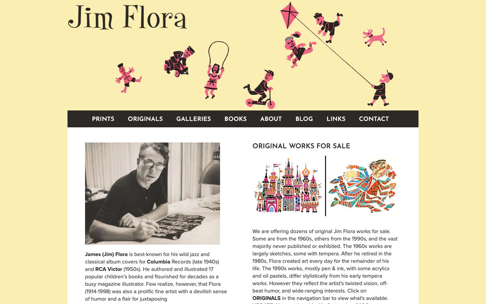

References / Website / 219
Jim Flora website
The official Jim Flora site puts the illustrator’s small flat figures and a playful serif-script name on a pale butter-yellow header.
- Source
- jimflora.com
- Style
- Mid-century modern (agent-proposed, not yet reviewed by a person)
- Moods
- Playful, warm, whimsical
- Evidence
- Captured with
tools/capture.mjs(headless Chrome, 1440 × 900) on 28 September 2026 and inspected. The screenshot shows the first viewport; the measurement covers up to four screens. - Reviewed
- Rights
- Third-party work, stored with credit for commentary. License: unverified. Rights policy
Observed
- The header ground is a flat pale butter yellow (#faeeb2 in the screenshot palette).
- Small figures in flat pink and black play across it: a child on a scooter, a girl skipping rope, children tumbling, a boy flying a pink kite on a long line, and a pink dog. The figures are built from a few flat shapes with black details.
- “Jim Flora” at upper left is a dark, high-contrast display face with curled terminals.
- A full-width charcoal bar holds the menu in white geometric sans-serif capitals.
- Below, on white, a black-and-white photograph of Flora at work sits next to two colorful thumbnails of his later work and body text in a humanist sans-serif.
Why it belongs
The header uses the style’s method at small scale: two flat printed colors, figures reduced to a few planes, and generous open paper around them.
Measured: the page’s CSS sees only one hue family and a heading weight of 400, and the round shapes are drawn in images. The screenshot palette finds two hue families. See the style synthesis for why the computed-style metrics miss this.
Borrow
Scatter a few small flat figures across a warm pale header and leave most of it empty.
Limit the illustration to two printed colors, such as pink and black, on yellow paper.
Measured
Machine-extracted by tools/extract-traits.js on . Full measurement.
- Type families
- proxima-nova (90%), proxima-nova-condensed (6%), Josefin Sans (4%)
- Type scale ratio
- 1.13
- Median radius
- 0 px
- Mean chroma
- 0.09
- Palette
- #ffffff 46%
- #faeeb2 30%
- #2d2927 24%
- #5c80bc 1%

